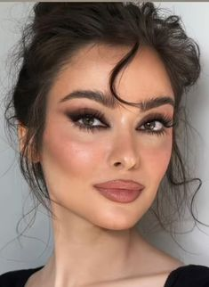

Smoky Makeup Archetype

Face:
- Flawless Foundation (Light/Medium Coverage): Creates a natural, even canvas for the smoky eye to be the star of the show. Explore
- Mattifying Primer: Controls shine and ensures the smoky eye stays put throughout the night. Explore
- Lightweight Foundation (Optional): Offers a natural base if you prefer a lighter look under the smoky eye. Explore
- Concealer: Targets blemishes and dark circles for a flawless finish. Explore
Eyes:
- Smoky Eyeshadow Palette (Black/Grey/Taupe): Offers a variety of shades to create a smoky effect. Look for shades with a matte or shimmery finish depending on your desired intensity. Explore
- Black Eyeliner (Pencil/Gel): Creates a dramatic and defined line on the upper lash line. Explore
- Kohl Eyeliner (Optional): Tightlines the upper waterline for extra intensity (use sparingly for a natural smoky effect). Explore
- Volumizing & Lengthening Mascara: Thickens, lengthens, and defines lashes for a dramatic smoky eye. Explore
- False Lashes (Optional): Add extra drama and volume to your lashes. Explore
- Brow Pencil/Powder/Gel (Angled): Fills and defines brows for a structured look that complements the smoky eye. Explore
Lips:
- Nude Lipstick (Matte/Satin Finish): Keeps the focus on the eyes while balancing the look. Explore
- Muted Berry/Plum Lipstick (Optional): A bolder option for a dramatic smoky eye look. Choose a shade that complements your skin tone. Explore
- Lip Liner (Optional): Defines the lip shape and prevents lipstick from bleeding (especially important with darker shades). Explore